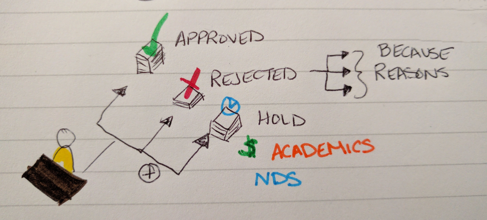
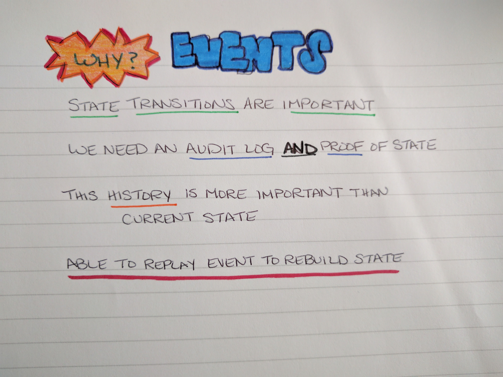
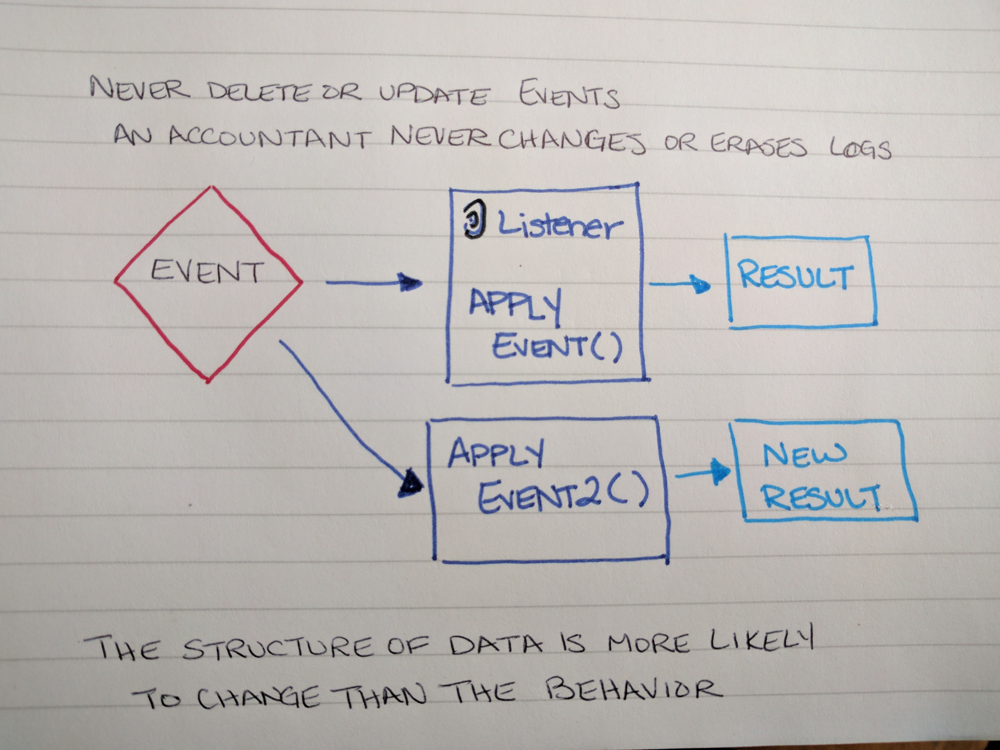

Status Change: Now Using Event Sourcing
by Emily Stamey
by Emily Stamey
I work at NC State
Our applications support the College of Engineering, mostly outside of the classroom
We maintain 70 legacy applications


A lot of our systems were built to replace paper processes
They often closely map to this physical form.

Piles indicate status of the form
Status doesn't really communicate why or what happened


Status is a reflection of something that happened
There is ONE of each status + reasons/details
Events can record what happened
The request doesn't get stuck
A Hold can be lifted, and the request process continue
The request can move to a next state
History is preserved
The fundamental idea of Event Sourcing is that of ensuring every change to the state of an application is captured in an event object, and that these event objects are themselves stored in the sequence they were applied for the same lifetime as the application state itself.


The event is less likely to change. Things like Approve and Reject a Request may later require additional attributes, but the part of the process that will change is most likely the result that follows that event.
The structure of the resulting data is more likely to change than the behavior
There are many classes involved:
Event code
Event can be wrapped by Domain message
This contains a version, timestamp, id, and the event itself
Domain Message
Event Store is a domain specific database for people who use the Event Sourcing pattern in their apps. It is a functional database which based on a publish-subscribe messages pattern.
snapshot of the Events table
code for the eventstore code that tells which Events to pick from the eventstore
code for projections
code for read model
Commands
Handlers
Emily Stamey
Twitter: @elstamey
Joind.in: https://joind.in/talk/280df